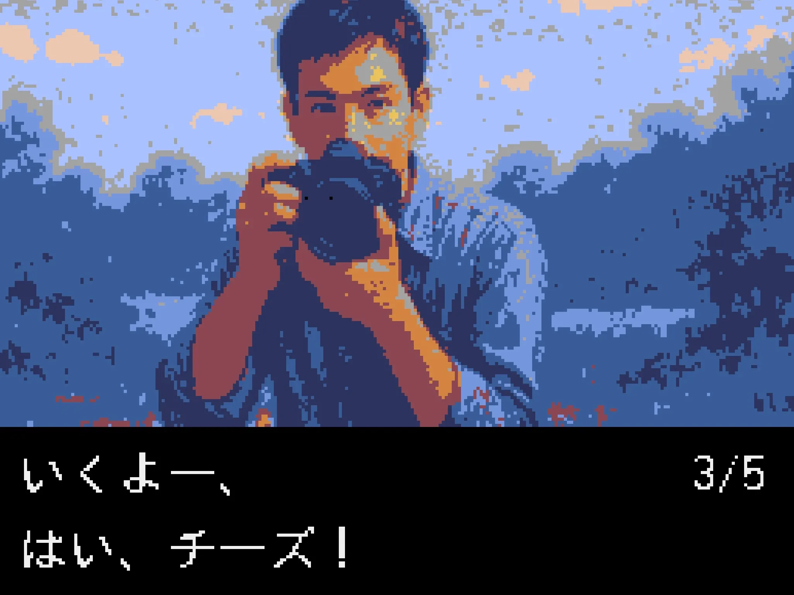
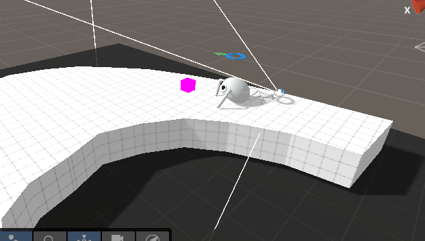
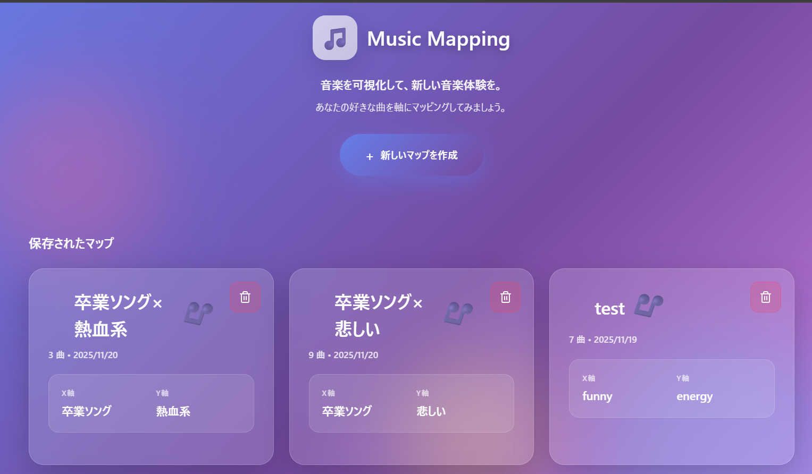
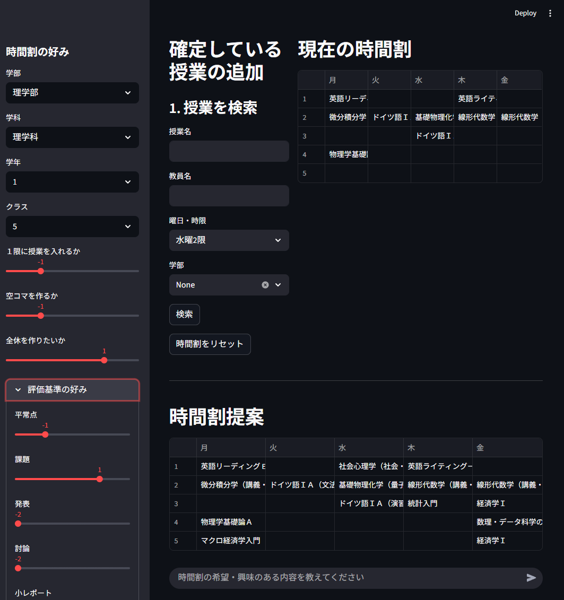

サークル紹介
京都大学人工知能研究会 KaiRAは、AIについて学んでいるサークルです。
毎週木曜日に勉強会を行っており、今期は強化学習と数理最適化についての本の輪読をしています。 読みたい本・論文があれば、人を集めてみんなで読むことも可能です!
週に一度実装会も行っており、各回でテーマを決めて、輪読会の内容を実装したりしています。
月に一度論文読み会も行っており、各回でテーマを決めて、最新のAI論文を発表したりしています。
活動の中心は毎週木曜日の勉強会と実装会ですが、制作物を作ったり、チームを組んでkaggleなどの機械学習コンペティションに参加したりもしています。
スポンサーとして株式会社Ristさんと株式会社スクラムサインさんが付いてくださっており、サークルメンバーに対して本の購入補助や計算機代の補助もしています。
11月祭の展示で興味を持った方がいればぜひ一緒に勉強しましょう！
会誌
11月祭に向けてサークルメンバーで会誌を作成しました。少しでもAIの技術について興味を持っていただけたら幸いです。
今年の会誌は主に、AIデモの内容について、使われている技術や実験内容を書きました。
- 第1章：ニューラルネットワーク入門
- 第2章：画像生成入門
- 第3章：事前学習済みTransformerを用いた化学反応収率のベイズ最適化
- 第4章：Agenticな京大シラバス検索・時間割作成システム
- 第5章：音楽と自然言語の類似度測定システムの開発
- 第6章：顔認識で操作するゲーム
- 第7章：歩くKaiRA君：強化学習を用いた二足歩行ロボットの歩行制御
- 参考文献
デモ
11月祭会場ではAIに関するデモを行っていますが、一部のデモはオンラインでもご覧になれます。 ぜひ楽しんでいってください！！
顔認識で操作するゲーム

MediaPipe Face Meshによる顔のランドマーク検出機能と、Pyxelゲームエンジンの組み合わせにより、表情を介したゲーム操作を実現します。
歩くKaiRA君

当サークルのマスコットキャラクターであるKaiRAくんが、目標に向かって動くようにアシストしましょう。
Music Mapping

音楽と自然言語の類似度を測定し、音楽を可視化するシステムです。
Agenticな京大シラバス検索・時間割作成システム

ユーザーから提示される履修希望や興味・関心といった曖昧な要望を解釈し、 時間割の空きコマや履修要件といった複雑な制約条件を考慮しながら、学期全体の時間割を自律的に構築・提案するシステムです。